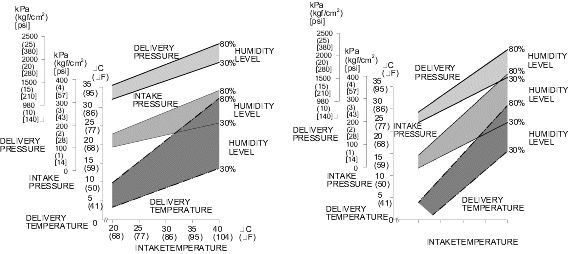

Expected low-side pressure
psi
30–80% RH range at this intake temp: psi
Approximate expected A/C pressures and vent temperature from intake temperature and relative humidity.
Range: 68–104°F intake temperature and 30–80% relative humidity.
The calculator linearly interpolates by intake temperature, then linearly interpolates within that output range based on humidity.
| Output | 68°F, 30% RH | 68°F, 80% RH | 104°F, 30% RH | 104°F, 80% RH |
|---|---|---|---|---|
| Low-side / intake pressure | 14 psi | 24 psi | 31 psi | 52 psi |
| High-side / delivery pressure | 161 psi | 210 psi | 280 psi | 340 psi |
| Vent / delivery temp | 37°F | 49°F | 56°F | 91°F |
The calculator interpolates from this factory performance chart. [p. 21-99]

¹ The service manual presents this chart in two versions side-by-side: 4-door (and 2-door) on the left and 5-door on the right. The curves differ slightly between body styles. The values used in this calculator reflect the 4-door/2-door chart. [p. 21-99]
The manual specifies exact test conditions. Deviating from them will shift your readings relative to these charts. [p. 21-98]
Where to measure: Insert a thermometer in the centre air vent for delivery temperature. Intake (ambient) temperature is read near the blower unit behind the glove box — this is not the same as outside air temperature and is the value to enter above. [p. 21-98]
Reading the chart: Draw a vertical line up from your intake temperature to your humidity curve. Mark points 10% above and 10% below that humidity level and draw horizontal lines from each across to the delivery temperature axis. Your reading should fall between those two lines. Apply the same method to the pressure charts. Any reading outside the band warrants further inspection. [p. 21-99]
Required any time the system is opened — after repair, component replacement, or accidental discharge. [p. 21-95]
From the factory pressure test table. [p. 21-100]
| Reading | What you see | Probable cause | Action |
|---|---|---|---|
| High-side too high | After stopping compressor, pressure drops to ~28 psi quickly then falls gradually | Air in system | Discharge, evacuate, recharge to spec |
| No bubbles in sight glass when condenser is cooled with water | Overcharge | Discharge, evacuate, recharge to spec | |
| Reduced or no airflow through condenser | Clogged condenser/radiator fins, or condenser/radiator fan not working | Clean fins; check fan voltage, rpm, and rotation direction | |
| Line to condenser excessively hot | Restricted refrigerant flow | Inspect for kinked or blocked lines | |
| High-side too low | Excessive bubbles in sight glass; condenser not hot | Undercharge | Check for leaks, then recharge |
| High and low pressures equalise quickly after stopping compressor; low side is higher than normal while running | Faulty compressor discharge valve or seal | Replace compressor | |
| Low-side too low | Excessive bubbles in sight glass; condenser not hot | Undercharge | Repair leaks; discharge, evacuate, recharge to spec |
| Expansion valve not frosted; low-pressure line not cold; low-side gauge shows vacuum | Frozen or faulty expansion valve (moisture in system) | Discharge, evacuate, recharge; replace expansion valve if needed | |
| Low delivery temperature; airflow from vents restricted | Frozen evaporator | Run fan with compressor off; check evaporator temperature sensor | |
| Expansion valve is frosted | Clogged expansion valve | Clean or replace expansion valve | |
| Receiver/dryer outlet is cool; inlet is warm (both should be warm during operation) | Clogged receiver/dryer | Replace receiver/dryer | |
| Low-side too high | Low-pressure hose and check joint are cooler than the area around the evaporator | Expansion valve stuck open too long | Repair or replace expansion valve |
| Low-side pressure drops when condenser is cooled with water | Overcharge | Discharge, evacuate, recharge to spec | |
| Pressures equalise immediately when compressor stops; both gauges fluctuate while running | Faulty compressor gasket, high-pressure valve, or foreign particle in valve | Replace compressor | |
| Both sides too high | Reduced condenser airflow | Clogged fins or bad condenser/radiator fan | Clean fins; check fan |
| No bubbles in sight glass when condenser is cooled with water | Overcharge | Discharge, evacuate, recharge to spec | |
| Both sides too low | Low-pressure hose and metal ends are cooler than the evaporator | Clogged or kinked low-pressure hose | Repair or replace |
| Temperature around expansion valve is too low compared to temperature around receiver/dryer | Clogged high-pressure line | Repair or replace | |
| Refrigerant leaks | Compressor clutch is dirty or oily | Compressor shaft seal leaking | Replace compressor |
| Compressor bolts are dirty or oily | Leaking around bolt(s) | Tighten bolts or replace compressor | |
| Compressor gasket is wet with oil | Gasket leaking | Replace compressor |